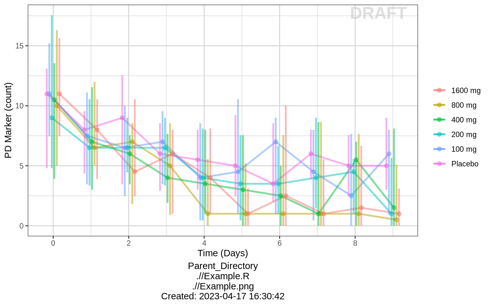
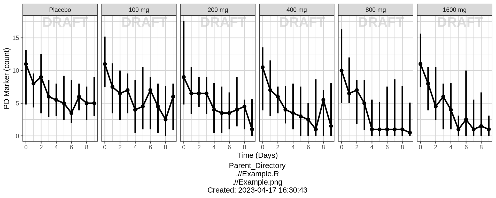
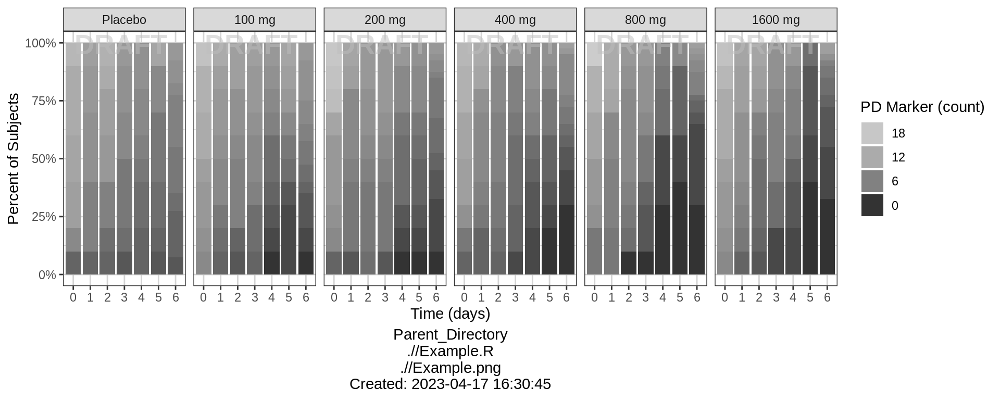
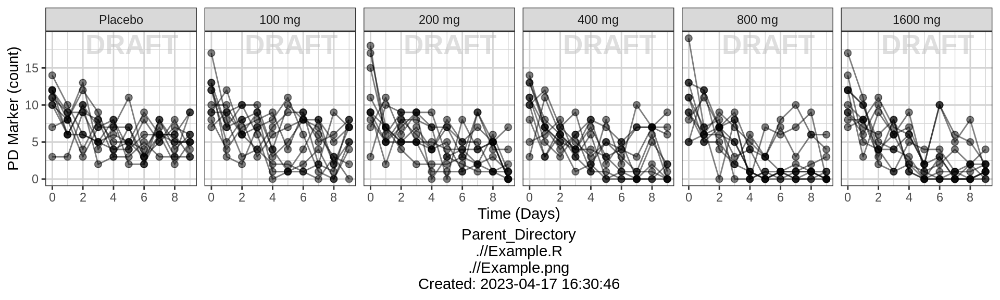
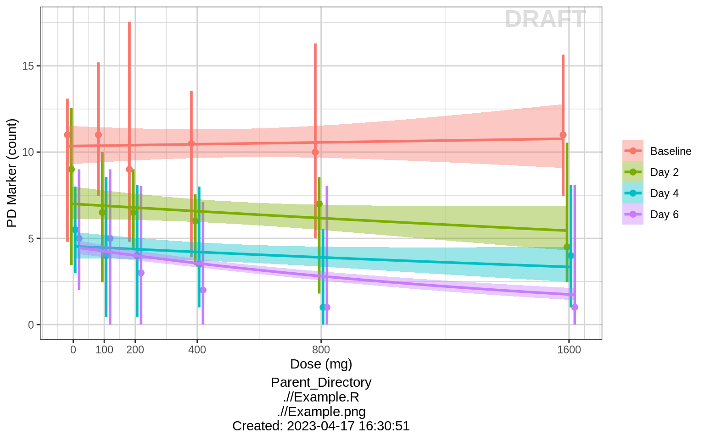
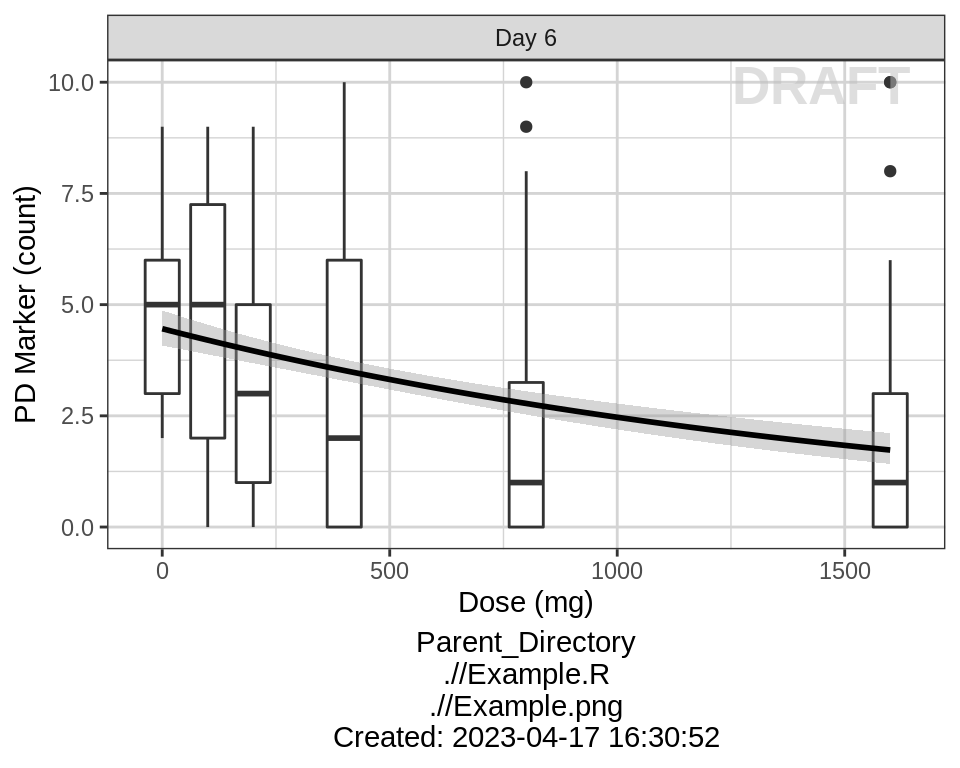
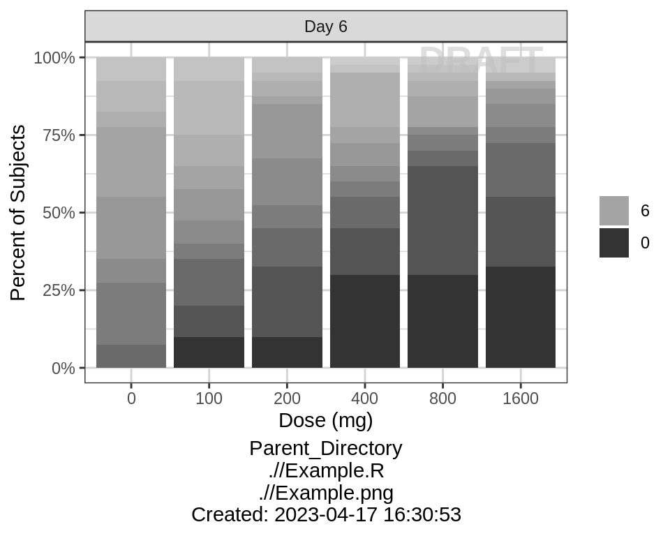
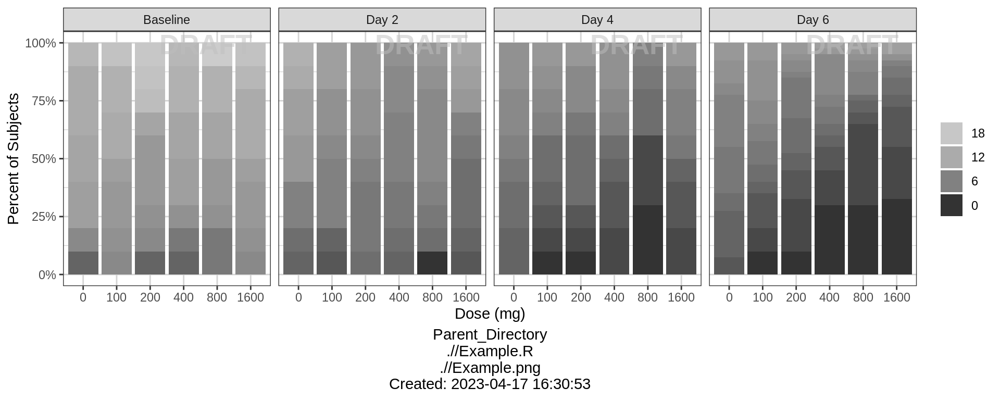

PD, Dose-Response - Count
Alison Margolskee
Overview
This document contains exploratory plots for count PD data as well as the R code that generates these graphs. The plots presented here are based on simulated data (see: PKPD Datasets). Data specifications can be accessed on Datasets and Rmarkdown template to generate this page can be found on Rmarkdown-Template. You may also download the Multiple Ascending Dose PK/PD dataset for your reference (download dataset).
Setup
library(ggplot2)
library(dplyr)
library(tidyr)
library(xgxr)
#flag for labeling figures as draft
status = "DRAFT"
## ggplot settings
xgx_theme_set()
#directories for saving individual graphs
dirs = list(
parent_dir = "Parent_Directory",
rscript_dir = "./",
rscript_name = "Example.R",
results_dir = "./",
filename_prefix = "",
filename = "Example.png")Load Dataset
#load dataset
pkpd_data <- read.csv("../Data/Multiple_Ascending_Dose_Dataset2.csv")
DOSE_CMT = 1
PD_CMT = 4
SS_PROFDAY = 6 # steady state prof day
PD_PROFDAYS = c(0, 2, 4, 6)
#ensure dataset has all the necessary columns
pkpd_data = pkpd_data %>%
mutate(ID = ID, #ID column
TIME = TIME, #TIME column name
NOMTIME = NOMTIME, #NOMINAL TIME column name
PROFDAY = case_when(
NOMTIME < (SS_PROFDAY - 1)*24 ~ 1 + floor(NOMTIME / 24),
NOMTIME >= (SS_PROFDAY - 1)*24 ~ SS_PROFDAY
), #PROFILE DAY day associated with profile, e.g. day of dose administration
LIDV = LIDV, #DEPENDENT VARIABLE column name
CENS = CENS, #CENSORING column name
CMT = CMT, #COMPARTMENT column
DOSE = DOSE, #DOSE column here (numeric value)
TRTACT = TRTACT, #DOSE REGIMEN column here (character, with units),
LIDV_UNIT = EVENTU,
DAY_label = ifelse(PROFDAY > 0, paste("Day", PROFDAY), "Baseline")
)
#create a factor for the treatment variable for plotting
pkpd_data = pkpd_data %>%
arrange(DOSE) %>%
mutate(TRTACT_low2high = factor(TRTACT, levels = unique(TRTACT)),
TRTACT_high2low = factor(TRTACT, levels = rev(unique(TRTACT)))) %>%
select(-TRTACT)
#create pd dataset
pd_data <- pkpd_data %>%
filter(CMT == PD_CMT) %>%
mutate(count_low2high = factor(LIDV, levels = sort(unique(LIDV))),
count_high2low = factor(LIDV, levels = rev(sort(unique(LIDV)))))
#units and labels
time_units_dataset = "hours"
time_units_plot = "days"
trtact_label = "Dose"
dose_units = unique((pkpd_data %>% filter(CMT == DOSE_CMT))$LIDV_UNIT) %>% as.character()
dose_label = paste0("Dose (", dose_units, ")")
pd_units = unique(pd_data$LIDV_UNIT) %>% as.character()
pd_label = paste0("PD Marker (", pd_units, ")") Provide an overview of the data
Summarize the data in a way that is easy to visualize the general trend of PD over time and between doses. Using summary statistics can be helpful, e.g. Mean +/- SE, or median, 5th & 95th percentiles.
Count over time, colored by Dose, median, 5th & 95th percentiles by nominal time
gg <- ggplot(data = pd_data,
aes(x = NOMTIME, y = LIDV, color = TRTACT_high2low, fill = TRTACT_high2low))
gg <- gg + xgx_geom_pi(percent_level = 0.95, geom = c("line", "point", "errorbar"), alpha = 0.5, position = position_dodge(-9.6))
gg <- gg + guides(color = guide_legend(""), fill = guide_legend(""))
gg <- gg + xgx_scale_x_time_units(units_dataset = "h", units_plot = "d")
gg <- gg + ylab(pd_label)
gg <- gg + xgx_annotate_status(status)
gg <- gg + xgx_annotate_filenames(dirs)
gg 
Count over time, faceted by Dose, median, 5th & 95th percentiles by nominal time
gg <- ggplot(data = pd_data,
aes(x = NOMTIME, y = LIDV))
gg <- gg + xgx_geom_pi(percent_level = 0.95, geom = c("line", "point", "errorbar"))
gg <- gg + guides(color = guide_legend(""), fill = guide_legend(""))
gg <- gg + xgx_scale_x_time_units(units_dataset = "h", units_plot = "d")
gg <- gg + facet_grid(~TRTACT_low2high)
gg <- gg + ylab(pd_label)
gg <- gg + xgx_annotate_status(status)
gg <- gg + xgx_annotate_filenames(dirs)
gg 
Percent of subjects by Count over time, faceted by dose
gg <- ggplot(data = pd_data, aes(x = factor(PROFDAY), fill = count_high2low))
gg <- gg + geom_bar(position = "fill") + scale_fill_grey(start = 0.8, end = 0.2, breaks = rev(seq(0, 18, 6)))
gg <- gg + scale_y_continuous(labels = scales::percent)
gg <- gg + ylab("Percent of Subjects") + xlab("Time (days)") + guides(fill = guide_legend(pd_label))
gg <- gg + facet_grid(.~TRTACT_low2high)
gg <- gg + xgx_annotate_status(status)
gg <- gg + xgx_annotate_filenames(dirs)
gg 
Explore variability
Use spaghetti plots to visualize the extent of variability between individuals. The wider the spread of the profiles, the higher the between subject variability. Distinguish different doses by color, or separate into different panels. If coloring by dose, do the individuals in the different dose groups overlap across doses? Does there seem to be more variability at higher or lower concentrations?
Spaghetti plots of Count over time, faceted by dose
gg <- ggplot(data = pd_data,
aes(x = NOMTIME, y = LIDV))
gg <- gg + geom_point(size = 2, alpha = 0.5)
gg <- gg + geom_line(aes(group = ID), alpha = 0.5)
gg <- gg + guides(color = guide_legend(""), fill = guide_legend(""))
gg <- gg + xgx_scale_x_time_units(units_dataset = "h", units_plot = "d")
gg <- gg + ylab(pd_label)
gg <- gg + facet_grid(~TRTACT_low2high)
gg <- gg + xgx_annotate_status(status)
gg <- gg + xgx_annotate_filenames(dirs)
gg 
Explore irregularities in profiles
Plot individual profiles in order to inspect them for any irregularities. Inspect the profiles for outlying data points that may skew results or bias conclusions.
Count over time, faceted by individual, individual line plots
ncol = length(unique(pd_data$ID))/length(unique(pd_data$DOSE))
gg <- ggplot(data = pd_data, aes(x = NOMTIME, y = LIDV))
gg <- gg + geom_point(size = 2)
gg <- gg + geom_line(aes(group = ID))
gg <- gg + guides(color = guide_legend(""), fill = guide_legend(""))
gg <- gg + xgx_scale_x_time_units(units_dataset = "h", units_plot = "d")
gg <- gg + facet_wrap(~ID + TRTACT_low2high, ncol = ncol)
gg <- gg + theme(panel.grid.minor.x = ggplot2::element_line(color = rgb(0.9, 0.9, 0.9)),
panel.grid.minor.y = ggplot2::element_line(color = rgb(0.9, 0.9, 0.9)))
gg <- gg + xgx_annotate_status(status, fontsize = 4, color = rgb(0.5, 0.5, 1))
gg <- gg + xgx_annotate_filenames(dirs)
gg 
Explore covariate effects on PD
Stratify by covariates of interest to explore whether any key covariates impact response. For examples of plots and code startifying by covariate, see Single Ascending Dose Covariate Section
Warning Be careful of interpreting covariate effects on PD. Covariate effects on PD could be the result of covariate effects on PK transfering to PD through the PK/PD relationship.
Explore Dose-Response Relationship
Count vs Dose, colored by time, median, 5th & 95th percentiles by nominal time
data_to_plot <- pd_data %>% subset(PROFDAY %in% PD_PROFDAYS)
gg <- ggplot(data = data_to_plot,
aes(x = DOSE, y = LIDV, color = DAY_label, fill = DAY_label))
gg <- gg + xgx_geom_pi(percent_level = 0.95,
geom = c("point", "errorbar"), position = position_dodge(50))
gg <- gg + guides(color = guide_legend(""), fill = guide_legend(""))
gg <- gg + scale_x_continuous(breaks = unique(data_to_plot$DOSE))
gg <- gg + xlab(dose_label) + ylab(pd_label)
gg <- gg + geom_smooth(method = "glm", method.args = list(family = poisson), position = position_dodge(50))
gg <- gg + xgx_annotate_status(status)
gg <- gg + xgx_annotate_filenames(dirs)
gg 
Count vs Dose, faceted by Time, boxplots by nominal time
data_to_plot <- pd_data %>% subset(PROFDAY %in% SS_PROFDAY)
gg <- ggplot(data = data_to_plot,
aes(x = DOSE, y = LIDV))
gg <- gg + geom_boxplot(aes(group = DOSE))
gg <- gg + guides(color = guide_legend(""), fill = guide_legend(""))
gg <- gg + geom_smooth(method = "glm", method.args = list(family = poisson), color = "black")
gg <- gg + xlab(dose_label)
gg <- gg + ylab(pd_label)
gg <- gg + facet_grid(~DAY_label)
gg <- gg + xgx_annotate_status(status)
gg <- gg + xgx_annotate_filenames(dirs)
gg 
Count vs Dose, faceted by Time, boxplots by nominal time
gg %+% (data = pd_data %>% subset(PROFDAY %in% PD_PROFDAYS))
Percent of subjects by Count
data_to_plot <- pd_data %>% subset(PROFDAY %in% SS_PROFDAY)
gg <- ggplot(data = data_to_plot, aes(x = factor(DOSE), fill = count_high2low))
gg <- gg + geom_bar(position = "fill") + scale_fill_grey(start = 0.8, end = 0.2, breaks = rev(seq(0, 18, 6)))
gg <- gg + scale_y_continuous(labels = scales::percent)
gg <- gg + ylab("Percent of Subjects") + xlab(dose_label)
gg <- gg + guides(fill = guide_legend(""))
gg <- gg + facet_grid(.~DAY_label)
gg <- gg + xgx_annotate_status(status)
gg <- gg + xgx_annotate_filenames(dirs)
gg 
Percent of subjects by Count, faceted by time
gg %+% (data = pd_data %>% subset(PROFDAY %in% PD_PROFDAYS))
R Session Info
sessionInfo()## R version 4.1.0 (2021-05-18)
## Platform: x86_64-pc-linux-gnu (64-bit)
## Running under: Red Hat Enterprise Linux
##
## Matrix products: default
## BLAS/LAPACK: /CHBS/apps/EB/software/imkl/2019.1.144-gompi-2019a/compilers_and_libraries_2019.1.144/linux/mkl/lib/intel64_lin/libmkl_gf_lp64.so
##
## locale:
## [1] LC_CTYPE=en_US.UTF-8 LC_NUMERIC=C LC_TIME=en_US.UTF-8 LC_COLLATE=en_US.UTF-8
## [5] LC_MONETARY=en_US.UTF-8 LC_MESSAGES=en_US.UTF-8 LC_PAPER=en_US.UTF-8 LC_NAME=C
## [9] LC_ADDRESS=C LC_TELEPHONE=C LC_MEASUREMENT=en_US.UTF-8 LC_IDENTIFICATION=C
##
## attached base packages:
## [1] stats graphics grDevices utils datasets methods base
##
## other attached packages:
## [1] RxODE_1.1.1 survminer_0.4.9 ggpubr_0.4.0 survival_3.2-11 knitr_1.33 broom_0.7.9 caTools_1.18.2
## [8] DT_0.18 forcats_0.5.1 stringr_1.4.0 purrr_0.3.4 readr_2.0.1 tibble_3.1.3 tidyverse_1.3.1
## [15] zoo_1.8-9 xgxr_1.1.1 gridExtra_2.3 tidyr_1.1.3 dplyr_1.0.7 ggplot2_3.3.5
##
## loaded via a namespace (and not attached):
## [1] readxl_1.3.1 backports_1.2.1 Hmisc_4.5-0 plyr_1.8.6 splines_4.1.0
## [6] RApiSerialize_0.1.0 crosstalk_1.1.1 digest_0.6.27 htmltools_0.5.1.1 rsconnect_0.8.24
## [11] fansi_0.5.0 magrittr_2.0.1 checkmate_2.0.0 memoise_2.0.0 cluster_2.1.2
## [16] tzdb_0.1.2 openxlsx_4.2.4 modelr_0.1.8 RcppParallel_5.1.4 prettyunits_1.1.1
## [21] jpeg_0.1-9 colorspace_2.0-2 rvest_1.0.1 PreciseSums_0.4 haven_2.4.3
## [26] xfun_0.25 crayon_1.4.1 RCurl_1.98-1.4 jsonlite_1.7.2 Exact_2.1
## [31] stringfish_0.15.2 glue_1.4.2 gtable_0.3.0 car_3.0-11 abind_1.4-5
## [36] scales_1.1.1 mvtnorm_1.1-2 DBI_1.1.1 GGally_2.1.2 rstatix_0.7.0
## [41] Rcpp_1.0.7 progress_1.2.2 xtable_1.8-4 htmlTable_2.2.1 foreign_0.8-81
## [46] proxy_0.4-26 km.ci_0.5-2 Formula_1.2-4 htmlwidgets_1.5.3 httr_1.4.2
## [51] RColorBrewer_1.1-2 ellipsis_0.3.2 pkgconfig_2.0.3 reshape_0.8.8 lotri_0.3.1
## [56] farver_2.1.0 nnet_7.3-16 sass_0.4.0 dbplyr_2.1.1 binom_1.1-1
## [61] utf8_1.2.2 tidyselect_1.1.1 labeling_0.4.2 rlang_0.4.11 munsell_0.5.0
## [66] cellranger_1.1.0 tools_4.1.0 cachem_1.0.6 cli_3.4.1 generics_0.1.0
## [71] evaluate_0.14 fastmap_1.1.0 yaml_2.2.1 sys_3.4 fs_1.5.0
## [76] zip_2.2.0 pander_0.6.4 survMisc_0.5.5 rootSolve_1.8.2.2 nlme_3.1-152
## [81] xml2_1.3.2 compiler_4.1.0 rstudioapi_0.13 curl_4.3.2 png_0.1-7
## [86] e1071_1.7-8 ggsignif_0.6.2 reprex_2.0.1 bslib_0.2.5.1 DescTools_0.99.42
## [91] stringi_1.7.3 highr_0.9 lattice_0.20-44 Matrix_1.3-3 markdown_1.1
## [96] KMsurv_0.1-5 vctrs_0.3.8 pillar_1.6.2 lifecycle_1.0.0 jquerylib_0.1.4
## [101] data.table_1.14.0 bitops_1.0-7 lmom_2.8 R6_2.5.1 latticeExtra_0.6-29
## [106] qs_0.25.1 rio_0.5.27 gld_2.6.2 codetools_0.2-18 boot_1.3-28
## [111] MASS_7.3-54 assertthat_0.2.1 minpack.lm_1.2-1 withr_2.4.2 Deriv_4.1.3
## [116] mgcv_1.8-35 expm_0.999-6 hms_1.1.0 grid_4.1.0 rpart_4.1-15
## [121] class_7.3-19 rmarkdown_2.11 carData_3.0-4 lubridate_1.7.10 base64enc_0.1-3